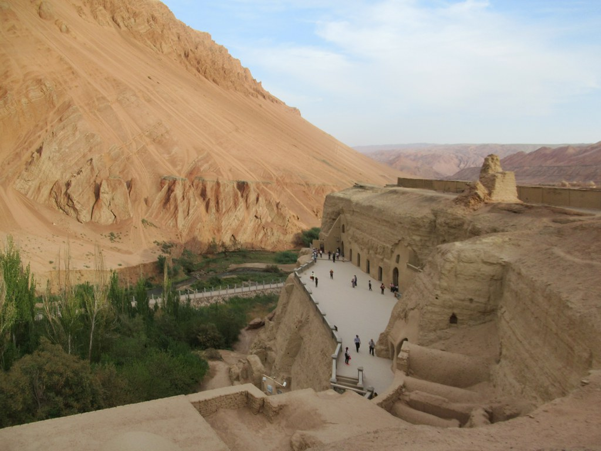

第 6 章
西域的切痕
吐鲁番盆地北缘，火焰山赭红色的山体在午后日光里几乎要燃烧起来。木头沟是一条干涸的河床，两岸崖壁陡立，砂岩质地疏松，手一碰就簌簌往下掉渣。崖壁上凿着洞窟，一层一层，像蜂巢。
这就是柏孜克里克千佛洞——“美丽装饰之所”，维吾尔语的字面意思。风从沟口灌进来，带着细沙，贴着崖壁走。沙粒打在砂岩上，发出极细微的摩擦声。这种声音已经持续了一千多年。
柏孜克里克现存洞窟八十三处，其中超过四十处留有壁画，面积总计超过一千二百平方米。洞窟开凿始于麹氏高昌时期，盛于回鹘汗国。壁画内容以佛教为主，也有摩尼教的痕迹。
回鹘王室供养的洞窟尤其华丽：主室两侧壁绘制大幅《誓愿图》，佛陀立于莲花座上，菩萨、天人、供养人层层环绕。衣纹用赭红色线条勾勒，面部施以金粉，背景是深蓝色的夜空与散花。这些壁画是回鹘佛教艺术的巅峰之作，也是佛教图像从印度经中亚传入中原的关键中间环节——犍陀罗的写实传统、波斯细密画的装饰趣味、唐代线描的流畅感，在这里融合成一种独特的风格。
但到了十九世纪末二十世纪初，这些壁画正处在双重危机之中。自然力的侵蚀从未停止。砂岩崖体吸收冬季雪水，结冰膨胀，岩层开裂。春季融水沿裂缝下渗，溶解了岩石中的盐分。水分蒸发后，盐分在地仗层背后结晶，把壁画一寸一寸地顶离墙体——这是酥碱。壁画表面起甲、空鼓、剥落，每天都有细小的颜料碎片掉下来，混进地上的沙土里。
地震则是不定时的访客。吐鲁番盆地处在天山地震带上，震动使本就疏松的崖体产生垂直裂缝，宽度可达二十厘米，从窟顶一直劈到地面。有些洞窟的前半室已经整个坍塌，壁画暴露在日照和风沙中，色彩褪得飞快。
另一种危机是人的离开。清帝国在十九世纪后期的治理能力急剧衰退，西北地区的地方行政几乎处于半真空状态。柏孜克里克千佛洞没有常设的看护人员，没有围墙，没有门。当地农民在洞窟里圈羊、堆草、生火做饭，烟熏火燎把壁画熏得漆黑。过往的商队偶尔在洞里过夜，炭火在墙壁上留下了新的灼痕。
还有人拿着刀，把佛像面部的金粉刮下来——不是因为仇恨，只是因为听说金子可以卖钱。这就是二十世纪初德国探险队抵达时看到的景象。
他们并非第一批来这里的外国人。俄国人走在了前面。德米特里·克列门茨在十九世纪末探查吐鲁番地区，开创了从新疆石窟切割壁画并运回本国的先河。他的行动向国际东方学界昭示了这片区域的富藏，也示范了一种处置文物的方式：使壁画成为可移动的标本。1909年至1910年，以及1914年，俄国学者奥登堡又两次在柏孜克里克工作，割取了包括第二十七窟文殊信仰壁画残片、第十五窟《誓愿图》在内的多件文物。这些残片最终入藏圣彼得堡的艾尔米塔什博物馆。
德国吐鲁番考察队正是在国际考古竞赛的背景下登场的。第一次考察由阿尔伯特·格伦威德尔率领，时间是1902年11月至1903年3月。格伦威德尔是柏林民族学博物馆的印度部主任，一位严谨的学者。他的工作方式以记录为主：测绘洞窟平面图，临摹壁画线稿，拍摄照片，抄录题记。他没有进行大规模切割。
但格伦威德尔的健康状况不佳，吐鲁番的酷热和风沙加重了他的旧疾。德国国内，柏林民族学博物馆的负责人阿道夫·巴斯蒂安急切地期待更多实物入藏。巴斯蒂安是当时欧洲人类学界的权威人物，他正在构建一个全球文化比较的宏大体系，需要来自世界各地的民族志与艺术标本来填充博物馆的展柜。吐鲁番的壁画，在他看来，是填补中亚佛教艺术这一环的关键材料。学术竞争的压力同样紧迫：俄国人、英国人、法国人、日本人都在中亚活动。谁先得到最好的标本，谁就掌握了学术话语权。
在这种情况下，第二次考察的策略发生了转变。考察队由阿尔伯特·冯·勒柯克主导，时间跨度为1904年9月至1906年4月。
勒柯克不是格伦威德尔那样的书斋学者。他出身商人家庭，早年曾在伦敦和纽约经商，后来才转向东方学研究。他精力充沛，行事果断，对巴斯蒂安的收藏计划抱有极大的热忱。
他带上了专门的工具：狐尾锯、凿子、锤子、木板箱、干草、棉絮。他有一支由当地土尔扈特蒙古人组成的施工队，这些人擅长在砂岩上作业。
切割壁画的操作流程，在勒柯克的报告中留下了清晰的记录。第一步是选好目标——通常是保存状态较好、图像最精美的部分，比如主尊的面部、菩萨的衣饰、供养人的肖像。然后用细齿锯沿着图像的边界锯开地仗层。地仗层是草泥混合的，厚度大约两到三厘米，锯起来并不困难，但必须小心控制深度，不能伤及颜料层。锯出轮廓后，用凿子从侧面轻轻敲入，使壁画块与岩壁分离。分离下来的壁画块被平放在铺了棉絮的木板箱里，表面再覆一层干草，然后钉上箱盖。每个箱子都编号，记录对应的洞窟和位置。
勒柯克在报告中写道，切割是为了“拯救”。他描述了自己看到的情景：当地农民在洞窟里生火，烟熏毁坏了大片壁画；墙上的金粉被刮掉，佛像的脸被挖去；崖体裂缝每天都在扩大，整面墙随时可能坍塌。他认为，如果不把这些壁画切下来运走，它们将在几十年内完全毁灭。
把它们带到柏林，放进博物馆，是唯一能让这些艺术品存续下去的办法。格伦威德尔对勒柯克的大规模切割持保留态度。
他于1905年底重新加入考察队，看到柏孜克里克洞窟里留下的锯痕，与勒柯克发生了争执。格伦威德尔主张完整的洞窟记录比获取实物标本更重要。切割破坏了壁画的原初语境，使图像脱离了建筑空间、光线条件和宗教功能，变成了孤立的、可任意摆放的碎片。
但勒柯克有柏林的支持。巴斯蒂安明确指示：尽可能多地收集实物。格伦威德尔的反对没有改变任何事情。
被切割带走的是柏孜克里克最精华的部分。第九窟的《誓愿图》被整面墙切下，画面中佛陀立于莲花座上，右手施无畏印，左手持衣角，两侧菩萨跪侍，飞天在上方散花。这幅画的线条流畅如写，色彩以朱砂、石青、金粉为主，是回鹘佛教艺术的代表作。第二十窟的供养人像也被切割：回鹘可汗与王妃身穿锦袍，头戴金冠，双手合十，面容沉静。他们的衣饰细节——锦袍上的联珠纹、腰带上的金饰、发髻上的簪花——为研究回鹘物质文化提供了绝无仅有的图像证据。还有摩尼教洞窟的壁画残片，描绘白衣白冠的摩尼教僧侣在树下抄经，背景是葡萄藤和石榴树。
这是全世界仅存的几处摩尼教壁画遗存之一。这些壁画残片被装上驼背，穿越戈壁，从吐鲁番运到喀什，再经俄国铁路线运抵柏林。总共装了三百多箱，重达数十吨。
柏林民族学博物馆为这批藏品专门设立了中亚艺术展厅，勒柯克亲自参与了陈列设计。壁画残片被镶进特制的石膏背板，挂在墙上，配上灯光、展签和玻璃罩。它们不再是洞窟里的宗教图像，而变成了博物馆里的艺术标本——可以被近距离观察、拍照、测量、比较。学者们开始按照风格类型、图像母题和年代序列来分类这些残片：这是“印度-伊朗风格”，那是“回鹘-中国风格”；这是“早期”，那是“晚期”。一套完整的学术分类体系建立起来，而这些分类的根据，恰恰是切割行为本身所创造的可移动、可并置的碎片。解释权从洞窟的宗教空间转移到了博物馆的学术空间。
然后，炸弹落了下来。1943年11月至1945年2月，盟军对柏林进行了大规模空袭。柏林民族学博物馆所在的建筑群多次被直接命中。燃烧弹引发的高温使壁画残片上的颜料熔化、起泡、碳化。
冲击波把石膏背板震碎，壁画碎成小块，混在瓦砾堆里。勒柯克当年用来包装壁画的木板箱和干草，此时成了最好的引火物。那些他为了“拯救”而切下来的壁画，在它们被“拯救”的地方化为了灰烬。
战后清理废墟时，人们发现了一些幸存下来的残片。它们有的被压在倒塌的楼板下，有的被水浸透后冻成了冰坨，有的只剩下巴掌大小，画面完全无法辨认。这些残片被转移到博物馆的地下室和郊外的仓库，编号混乱，来源记录丢失。一块残片上可能保留着佛陀的半张脸，另一块上是一只手的轮廓，再一块上只是一片蓝色——那是《誓愿图》背景夜空的颜色。但没有人能确认它们到底属于哪一幅壁画，来自哪一个洞窟。
现在，把目光转回木头沟。被切割后的洞窟，墙上留下了锯齿状的空白。地仗层被锯开的边缘参差不齐，露出草泥的断面，里面混着麦秸和细沙。有些地方，凿子打入时用力过猛，把周围的壁画也震裂了。裂缝从切痕向外辐射，像闪电的形状。这些切痕的尺寸和形状各不相同：第九窟的切痕是一整面墙，大约三米宽、两米高；
第二十窟的切痕是几个小方块，每个大约四十厘米见方，那是供养人像的位置；摩尼教洞窟的切痕更小，只取了有僧侣形象的核心部分。
切痕周围的壁画还在继续剥落。酥碱没有停止，起甲没有停止，风沙没有停止。每年春天，融雪水沿裂缝渗进崖体，到了冬天结冰膨胀，把更多的壁画顶离墙面。有些洞窟在切割行为发生后不久就坍塌了——不是因为切割直接导致了坍塌，而是因为崖体本身的结构已经脆弱到了临界点，任何扰动都可能成为最后一根稻草。第二十七窟的前室在二十世纪三十年代的一次地震中完全垮塌，窟顶砸下来，把地面上残留的壁画碎片埋在了下面。
当地居民继续使用这些洞窟。羊群仍然被赶进来过夜，烟熏的痕迹在切痕上方叠加了新的黑色。偶尔有人路过，会注意到墙上那些奇怪的几何形状的空白，问一句“这是什么”，然后继续赶路。
到了1950年代初期，情况开始发生变化。由阎文儒、常书鸿等人组成的西北文化局新疆文物调查工作组对柏孜克里克千佛洞进行了复查。

工作组成员沿着崖壁逐窟勘察，记录壁画保存状况，拍摄照片，清理堆积的沙土和羊粪。他们在一些洞窟的地面堆积层中发现了壁画碎片——那是切割时掉落的边角料，还有自然剥落的小块。这些碎片被收集起来，编号入库。
1962年，《新疆天山以南的石窟》一文在《文物》期刊上发表，系统介绍了包括柏孜克里克在内的新疆石窟遗存。1982年，柏孜克里克千佛洞被列为第二批全国重点文物保护单位。1985年，《柏孜克里克千佛洞清理简记》发表，公布了清理发掘的成果。
进入二十一世纪，保护工作进一步升级。2010年代初，新疆重点文物保护项目领导小组执行办公室作为建设单位，敦煌研究院、兰州大学文物保护研究中心、西北大学文博学院、新疆文物古迹保护中心作为设计单位，甘肃中铁地质灾害防治技术工程有限公司作为施工单位，对柏孜克里克千佛洞进行了两期抢险加固工程。工程主要针对崖体结构稳定性和渗水问题：在裂缝中注入灌浆材料，用锚杆加固危岩，在崖顶修筑排水沟。
这两期工程分别被评为2011年度十大文物维修工程和2013年度全国十佳文物保护工程。但那些切痕仍然留在墙上。加固工程没有填补它们，也没有复制被切走的画面。它们是裸露的，和周围的壁画形成强烈的视觉对比：一边是残存的色彩和线条，另一边是草泥的断面，灰黄色的，粗糙的，没有任何图像。这种对比比空无一物的白墙更刺目，因为它不是自然的剥落，而是工具的痕迹——锯条走过的路径清晰可辨，转弯处有轻微的弧度，那是手腕用力的方向。
在柏林，寻找工作一直在进行。战后，一部分幸存的壁画残片被苏联红军作为战利品运到了列宁格勒，后来长期存放在艾尔米塔什博物馆的库房里，没有展出，没有编目。直到冷战结束后，德国和俄罗斯的学者才开始合作清点这批藏品。他们找到了柏孜克里克壁画的一些残片，比对勒柯克当年的照片和报告，试图确定每块残片的原始位置。有些能够确认，大多数不能。一块残片上残存着半朵莲花，可能是某幅《誓愿图》左下角的一部分。
吐鲁番盆地的风是有名字的。当地维吾尔人叫它“黑风”——喀喇布兰。它从准噶尔盆地南下的冷空气与塔里木盆地的热气流在火焰山北麓相遇，形成剧烈的气压差。风起时没有任何预兆。刚才还是烈日当空，下一分钟，北边的地平线上就升起一道黄褐色的墙。那不是沙尘暴，是整座戈壁被掀了起来。风速可以达到每秒四十米，挟带的砂砾打在脸上像鞭子抽。
1905年春天，勒柯克在木头沟经历了一次黑风。他在日记里写道：“风把帐篷连根拔起，我们不得不躲进洞窟。沙粒从窟门灌进来，打在壁画上，整面墙都在沙沙作响。我用手指摸了摸画面，指尖沾了一层颜料粉末。这些粉末在一小时前还是菩萨衣襟上的金线。”这段记录后来被他写进了考察报告，作为“拯救”必要性的论据之一。他在同一页写道：“任何亲眼见过这场面的人都不会怀疑，这些壁画如果不被移走，将在十年内被风沙磨成光板。”
风沙不是唯一的侵蚀力量。吐鲁番盆地的年温差可以达到七十摄氏度以上。夏季地表温度超过八十度，冬季则降至零下二十度。砂岩崖体在这样的温差下反复热胀冷缩，内部结构逐渐松散。更致命的是水。吐鲁番年降水量不足二十毫米，但冬季的雪和春季的融水足以渗入岩层。水溶解了砂岩中的可溶性盐——主要是硫酸钠和氯化钠——然后在地仗层背后结晶。
盐结晶的体积膨胀产生巨大的压力，把地仗层从岩壁上顶起来。这个过程叫酥碱，是壁画最致命的病害。酥碱发生的时候，壁画表面会出现细小的鼓包，然后鼓包破裂，颜料层连同地仗层一起剥落。剥落的速度取决于盐分的浓度和湿度的变化。在柏孜克里克，有些洞窟的壁画每年剥落面积可以达到数十平方厘米。剥落下来的碎片落在地上，混进沙土和羊粪里，踩几脚就变成了粉末。
勒柯克不是第一个描述酥碱的人。格伦威德尔在1903年的考察日记中已经详细记录了这一现象。他在第二十七窟的笔记中写道：“主室北壁的壁画大面积空鼓，用手轻轻按压可以感觉到地仗层与岩壁之间的空隙。空隙里填满了白色的盐结晶，像一层霜。壁画表面布满细密的裂纹，呈网状分布。
裂纹交叉处已经有颜料剥落，露出下面灰黄色的草泥层。”格伦威德尔画了素描，标出空鼓的范围和裂纹的走向。他还在同一页画了一个剖面图，显示地仗层、盐结晶层和岩壁之间的位置关系。这幅剖面图后来发表在考察报告里，成为中亚壁画病害研究的早期文献之一。
但格伦威德尔没有提出切割方案。他的应对方式是加速记录：测绘、临摹、拍照，赶在壁画消失之前留下尽可能完整的档案。他在给巴斯蒂安的信中写道：“我们正在与时间赛跑。每阵风、每次融雪都在带走画面的一部分。但我不认为切割是答案。切割会杀死病人来保存尸体。”
巴斯蒂安没有接受这个比喻。他在回信中写道：“尸体也好过骨灰。您送回来的临摹稿精美绝伦，但临摹稿不能替代原作。博物馆需要实物。公众需要亲眼看到这些壁画，学者需要亲手触摸它们的地仗层、分析它们的颜料成分。临摹稿是您的眼睛看到的东西，不是壁画本身。”这封信写于1904年3月，正是第二次考察出发前半年。巴斯蒂安在信末加了一句：“勒柯克先生将携带必要的工具与您会合。我希望您能给予他充分的自主权。”这句话决定了柏孜克里克的命运。格伦威德尔读到这句话时，正在柏林民族学博物馆的地下室里整理第一次考察的标本。他把信折好，放进口袋，继续工作。他没有再回信。
勒柯克带到吐鲁番的工具，比格伦威德尔想象的更精密。除了狐尾锯和凿子，他还带了一套德国索林根产的木工工具：不同宽度的平口凿、圆口凿、斜口凿，一把曲柄手钻，几把不同齿距的细齿锯，还有一卷钢丝锯——这是用来切割不规则曲面的。他在日记里详细描述了每种工具的用途：“狐尾锯用于切割直线边缘，锯齿较粗，适合切开草泥地仗层。钢丝锯用于切割弧形轮廓，比如佛像头光的外缘。
平口凿用于分离地仗层与岩壁，凿刃宽度三厘米，可以精确控制力度。圆口凿用于处理角落和转折处。”这些工具在柏林出发前经过了专门改造。锯条被截短，以适应洞窟狭窄的空间。凿柄被加长，以便在墙面上施加杠杆力。勒柯克还带了一台手摇砂轮机，用来打磨锯条和凿刃——吐鲁番的砂岩含有石英颗粒，对工具的磨损非常严重。
施工队由十二名土尔扈特蒙古人组成，来自焉耆附近的一个游牧部落。勒柯克在报告中称他们为“天生的石匠”。土尔扈特人世代在砂岩地区生活，懂得如何判断岩层的纹理和强度。他们用指关节敲击崖壁，根据回声判断内部是否有裂缝或空洞。他们知道从哪个方向下锯阻力最小，知道在哪个角度敲凿子最不容易震裂周围的壁画。勒柯克写道：“他们有一种直觉，能感知石头的脾气。”
但直觉不能替代技术。切割过程中仍然有事故。第九窟的《誓愿图》在分离时，画面右下角的一块地仗层突然碎裂，大约十五厘米见方的画面变成了碎片。碎片上是佛陀脚踝的一部分和一片莲花瓣。勒柯克把碎片收集起来，用阿拉伯树胶粘回原位。他在报告中轻描淡写地提了一句：“小块剥落，已修复。”
但修复的痕迹在照片上清晰可见：粘合处有一条细线，颜色比周围略深。这块修复过的壁画后来被运到柏林，编号MIK III 837，陈列在中亚艺术展厅的中央位置。
1943年11月22日夜，一枚燃烧弹穿透展厅屋顶，MIK III 837被直接命中。粘合处的阿拉伯树胶在高温下熔化、燃烧，那块十五厘米见方的碎片从背板上脱落，掉在地上，被后续的冲击波震成更小的碎块。战后清理时，人们只找到了其中三块，拼在一起还不到巴掌大。
现在，让我们离开柏林，回到木头沟。时间不是1943年，而是1906年春天，勒柯克刚刚完成最后一次切割，驼队正在山脚下装箱。洞窟里安静下来。风从锯开的窟门灌进来，在空荡荡的洞窟里打着旋。
墙上留下了切痕。第九窟的切痕最大：一整面墙被取走，留下的空白是一个规则的长方形，大约三米宽、两米二高。地仗层被锯开的边缘非常整齐，像用刀切开的蛋糕。边缘的截面上可以看到地仗层的分层结构：最外层是细泥，厚度约五毫米，质地细腻，混合了细碎的麦秸；中间是粗泥层，厚度约两厘米，含有较粗的麦秸和砂粒；最内层是贴岩面的泥浆层，厚度约三毫米，已经部分钙化，呈灰白色。
这三层结构是回鹘时期壁画地仗层的典型做法，在锯开的截面上看得一清二楚。勒柯克在报告中画了地仗层的剖面图，标注了各层的厚度和材料。这份剖面图后来成为研究中亚壁画制作工艺的重要资料。但获得这份资料的代价是：这面墙上的壁画永远失去了它的地仗层。
切痕的边缘不是完全光滑的。仔细看，可以看到锯条走过的细微痕迹：每厘米大约有四到五个锯齿印痕，呈平行的横纹。在转角处，锯条改变了方向，留下一个半径大约两厘米的弧形。那是手腕转动的角度。弧形内侧的锯齿印痕比直线部分更密，说明勒柯克在转弯时放慢了速度。在切痕的右下角，凿子打入时留下了一个楔形缺口，深度约五毫米，宽度约三厘米。缺口边缘的草泥被压碎，麦秸纤维露了出来，像折断的骨头茬。
这个缺口是分离壁画块时的受力点。勒柯克在这里把平口凿打入地仗层与岩壁之间的缝隙，然后用力撬动，使壁画块与岩壁分离。撬动时，凿子在缺口边缘施加了不均匀的压力，导致周围的壁画出现了放射状裂纹。裂纹从缺口向外延伸，最长的约有四十厘米，穿过了切痕下方残存的壁画——那是一排供养人像的下半身，脚踝以下的部分。裂纹把一只脚劈成了两半。
第二十窟的切痕是另一种形态。勒柯克在这里只取了供养人像的面部和上半身，留下了几个小方块。每个方块大约四十厘米见方，排列在一面墙上，像一扇扇被凿掉的小窗。方块之间的壁画还在：供养人的袍服下摆、腰带、靴子，以及背景中的花卉纹饰。但这些残存的部分失去了与面部的连接，变成了无头的身体、无身体的衣饰。一个供养人的手还留在墙上，双手合十，手腕以上是空的。手腕的切痕是一个水平的锯口，锯口上方是草泥的断面，下方是锦袍的袖口纹饰——联珠纹，红地白花，线条流畅。手和袖口之间隔着三厘米的空白，那是锯条的厚度。这只手就这样悬在墙上，合十，朝向一个已经不存在的身体。
摩尼教洞窟的切痕最小，也最精确。勒柯克只取了有僧侣形象的核心部分：一个直径大约五十厘米的不规则圆形，包含了白衣僧侣的上半身、面前的经书和背后的葡萄藤。切痕的边缘沿着图像的轮廓走，避开了背景中次要的部分。这种切割方式需要先用钢丝锯沿着轮廓锯出沟槽，再用凿子从中心向外逐层分离。操作难度比直线切割大得多，但可以最大限度地保留图像的完整性。
但柏孜克里克有《誓愿图》的洞窟不止一个，莲花母题也是无处不在。这块残片的身份就这样悬置着：它肯定来自柏孜克里克，但不知道属于哪一窟、哪一面墙、哪一个位置。还有一块残片，大约二十厘米见方，上面画着一只眼睛。
眼睑的线条是赭红色的，瞳孔是深褐色的，眼白部分因为颜料氧化而微微发黄。这是一只佛陀的眼睛，半睁半闭，向下俯视——典型的回鹘风格佛像的眼部画法。这只眼睛可能是某幅大型佛像面部的一小部分。其余部分——额头、鼻梁、嘴唇、耳朵——都已经毁于轰炸。
它现在躺在柏林亚洲艺术博物馆的库房里，编号模糊，来源标签上只写着“吐鲁番地区，柏孜克里克（？），德国吐鲁番考察队收集，一九〇四至一九〇六”。问号是后来加上去的。这只眼睛看着的不是洞窟里的朝拜者，而是库房的白色天花板。它被切下来的时候，勒柯克相信自己在拯救它。它被运到柏林的时候，巴斯蒂安相信自己在为它建立永久的归宿。
炸弹落下的时候，它和其他的残片一起被埋在瓦砾下，然后被挖出来，被运走，被重新发现，被编目，被存入库房。它经历了切割、运输、展览、轰炸、掩埋、发掘、转移、再编目——每一次转手都改变了它的身份：从宗教图像到学术标本，从战利品到文化遗产，从失踪物到待鉴定残片。解释权在每一次转手中流转，而这只眼睛始终半睁半闭，沉默地看着这一切发生。